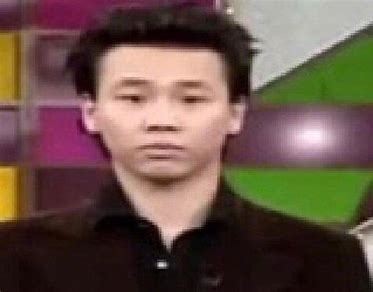

David Tao
Education
Work
Hobbies
Achievements
Family
Famous Songs
Contact
Education
High School: Taipei American School
College: University of California, Los Angeles (UCLA)
Degree: Bachelor of Arts in Psychology
Work
Music Producer - Created award-winning albums blending R&B, rock, and pop.
Singer-Songwriter - Released critically acclaimed albums.
Film Composer - Composed soundtracks for movies and TV.
Hobbies
Photography - Capturing moments from travels and daily life.
Technology - Exploring new gadgets and music production tech.
Music Advocacy - Supporting emerging artists through mentorship.
Fitness & Wellness - Engaging in yoga and hiking.
Achievements
Won multiple Taiwan Golden Melody Awards, including Best Mandarin Male Singer.
Released iconic songs such as "Love, Very Simple", "Black Tangerine", "Melody".
Pioneered the integration of R&B into Chinese pop music.
Graduated from the University of California, Los Angeles (UCLA).
Launched "Soul Power II World Tour" in 2024.
Family
Father: Tao Dawei - Taiwanese singer, producer, and children's TV host.
Mother: Wang Furong - Peking opera artist from a famous performing arts family.
Grandfather: Wang Zhenzu - Founder of Taiwan's Fuxing Opera School.
Grandfather (Paternal): Tao Yishan - Former Police Chief of Taiwan, originally from Nanjing, Jiangsu.
Cousin: Tao Junwei - MTV music channel VJ.
Wife: Jiang Peirong - Married in 2014.
Son: Bonbon (Tao Xi) - Born on February 14, 2019.
Famous Songs
天天
普通朋友
蝴蝶
爱我还是他
小镇姑娘
Listen on
Spotify
or watch on
YouTube
.
Contact
Email: han29@mcmaster.ca
Visit My Website